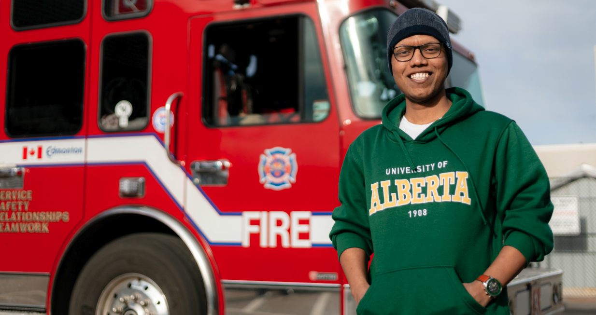
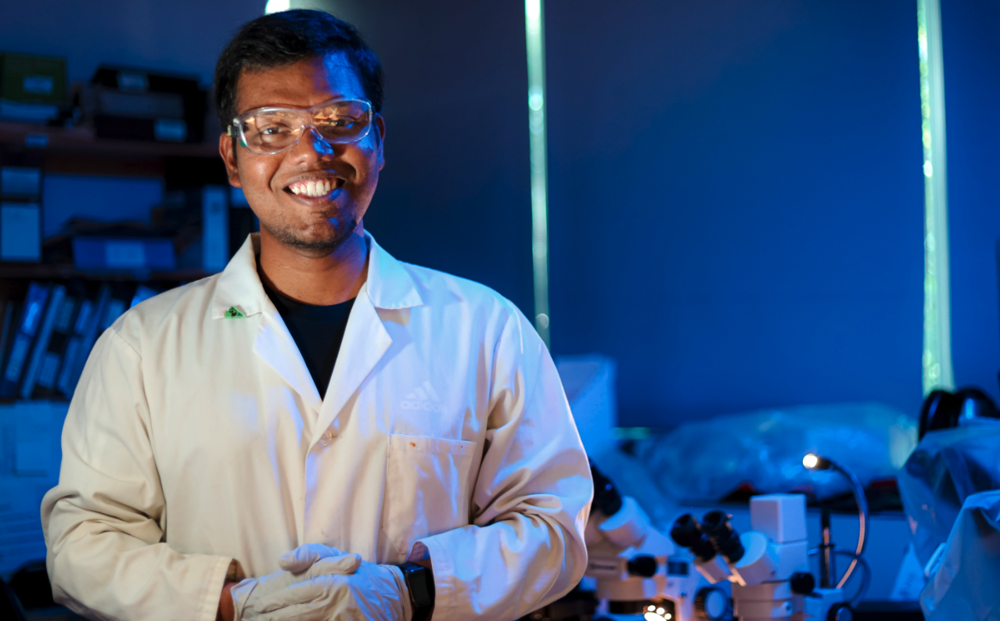
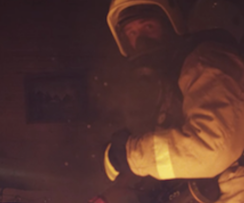
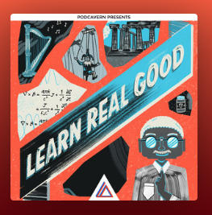

Development of Smart Textile Solution for Monitoring Cardiovascular Health in this Era of Changing Climate — awarded a TransformHF Collaboration Starter Grant 2025.
TransformHF — Collaboration Starter Grants 2025
My project has been awarded a Collaboration Starter Grant from TransformHF, focusing on developing smart textile solutions for monitoring cardiovascular health in the context of a changing climate. This initiative brings together interdisciplinary expertise to address emerging health challenges through wearable textile technology.
Read More →
University of Alberta — Folio
University of Alberta researchers report developments aimed at improving the safety and performance of firefighters' protective clothing, with potential to reduce injury risk on the job.
Read Full Article →
University of Alberta — Folio
This article highlights research into advanced protective materials and design approaches intended to enhance thermal and chemical protection for firefighters and other high-risk workers.
Read Full Article →Chemical Institute of Canada — Chemistry Magazine
This piece examines limitations in current firefighting garments and discusses gaps in materials, testing and standards that can leave wearers underprotected.
Read Full Article →University of Alberta — Folio
Research from my PhD developing a sensor technology to detect damage in firefighters' protective clothing, providing a faster and easier way to ensure safety.
Read Full Article →
Davey Textiles
Collaboration with Davey Textiles to develop innovative methods for detecting damage in protective textiles, building on my PhD research.
Read Full Article →YouTube Video
A project I worked on during my PhD, funded by the Department of National Defence (DND), focusing on advanced protective textile solutions.
Watch on YouTube →
University of Alberta — Faculty of Agricultural, Life & Environmental Sciences
Featured coverage of my convocation, highlighting my academic journey and research contributions during my PhD at the University of Alberta.
Read Full Article →
CABHI — Centre for Aging + Brain Health Innovation
Featured in CABHI's Science Collaborative Spotlight, highlighting my research on smart textile innovation for healthcare and biomedical applications.
Read Full Article →Firefighters Podcast
This episode explores groundbreaking research from the University of Alberta on factors that weaken firefighters' protective clothing over time, featuring Saiful Hoque and Dr. Patricia Dolez discussing the effects of moisture, heat, and chemical exposure on PPE performance and lifespan.
Listen to Episode →
Spotify Podcast
I was invited to share my research journey, insights on smart textiles, and the future of protective clothing on this podcast episode.
Listen on Spotify →YouTube
Invited talk as part of the Inside Textiles series, discussing research innovations in textile science, design, and protective clothing applications.
Watch on YouTube →YouTube
Continued discussion on textile science and innovation, exploring advanced materials and their applications in protective clothing and wearable technology.
Watch on YouTube →YouTube
Further exploration of textile research, covering smart textile technologies and their role in advancing protective gear and biomedical applications.
Watch on YouTube →YouTube
The final session of the series, bringing together key insights on textile science, design innovation, and the future of smart protective textiles.
Watch on YouTube →YouTube — with Azadeh
Collaborative talk with Azadeh exploring the intersection of aging, thermoregulation, and everyday clothing, presented by KITE Creates and FIBRE.
Watch on YouTube →